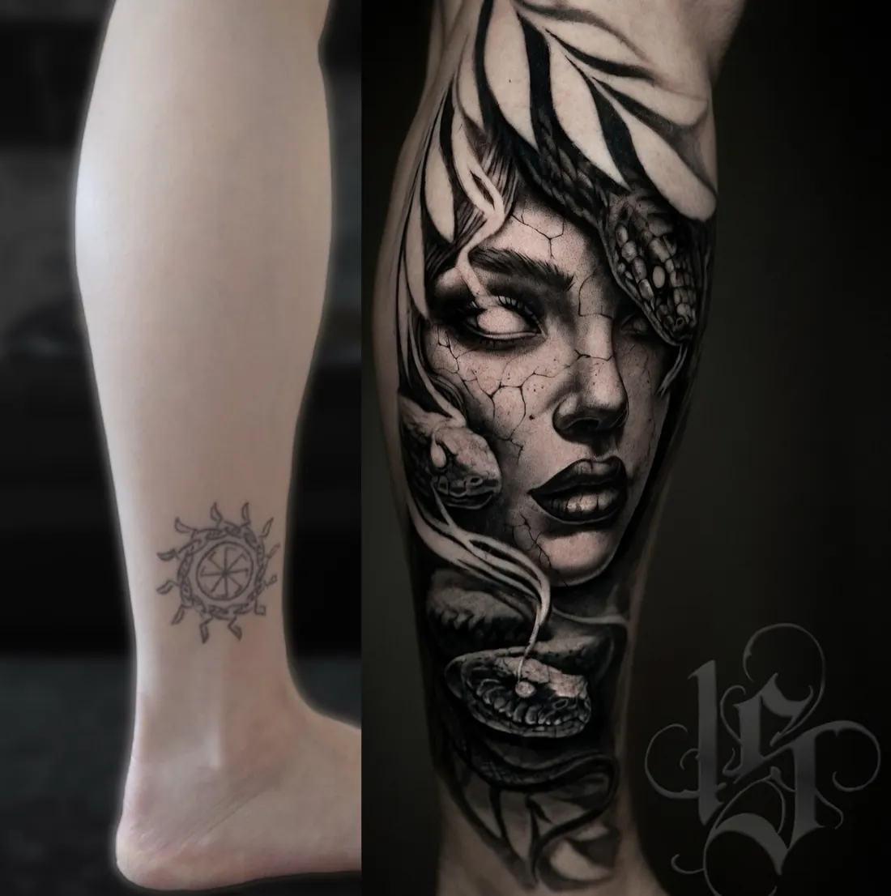

Тату-студия INKSIDE · Минск
Коррекция тату в Минске
Старая тату выцвела, поплыла или изначально получилась неудачно? Иногда её не нужно закрывать целиком: достаточно коррекции. Пришлите фото, и мастер скажет, что можно сделать.
Консультация бесплатная. Ежедневно 11:00-23:00 по записи.
Что такое коррекция тату
Коррекция - это работа с уже существующим рисунком без его полной замены. Мастер сохраняет идею и основу, но обновляет то, что со временем ушло или изначально было сделано слабо. Пример - коррекция тату на груди и плече «до и после» в галерее ниже.
- Обновить контур. Линии с годами становятся мягче и тоньше, их можно прорисовать заново.
- Добавить тени и объём. Плоский рисунок получает глубину, и тату выглядит свежее.
- Освежить цвет. Выцветшие участки снова становятся насыщенными.
- Исправить ошибки. Кривые линии, неудачные пропорции, пятна и «поплывшие» места можно доработать или спрятать в новых деталях.
- Дополнить рисунок. Добавить фон, элементы или продолжение, чтобы старая работа стала частью новой.
Коррекция или перекрытие
Коррекция подходит, когда сам рисунок нравится или его можно спасти. Если тату не нравится совсем, сильно расплылась или слишком тёмная, честнее сделать перекрытие: новый рисунок, который полностью спрячет старый. Бывает и промежуточный путь, когда старую тату перерабатывают так сильно, что она становится частью новой композиции.
Что подойдёт вам, мастер скажет по фото при дневном свете. Консультация бесплатная.
Как проходит коррекция
- Фото. Снимите тату при дневном свете, ровно и без фильтров. Напишите, что именно не нравится.
- Консультация. Мастер предложит варианты: точечная доработка, серьёзная переработка или перекрытие.
- Эскиз. Если меняется рисунок, эскиз рисуется поверх старой тату, под ваше тело. Стенсил на коже покажет, где пройдут новые линии.
- Сеанс. Одноразовые иглы вскрываем при вас. Небольшая коррекция часто укладывается в один сеанс, большая переработка - в несколько.
- Заживление. План ухода по дням, через месяц присылаете фото на проверку.
Когда коррекцию делать рано
Если тату свежая, ей нужно сначала полностью зажить: на заживающей коже не видно, как на самом деле лёг пигмент. Поэтому коррекцию обычно делают не раньше, чем кожа перестанет шелушиться и успокоится, ориентир - около месяца.
Если тату сделана у нас, через месяц вы и так присылаете фото на проверку: если нужно, записываем на коррекцию. Условия уточните у своего мастера.
Кто делает коррекцию
Надежда делает коррекцию старых работ и перекрытия, в том числе в цвете и в реализме.
Виталий берётся за крупные проекты и сложные перекрытия старых татуировок в ч/б реализме.
Опыт каждого - больше 8 лет.
Сколько стоит коррекция тату
Коррекция считается по времени, как любая работа: от 180 BYN за работу до 1 часа, каждый следующий час 150 BYN. Если нужен новый эскиз поверх старого рисунка - от 40 BYN. Точную цену мастер называет после консультации и эскиза.
| Минимум, до 1 часа | 180 BYN |
| Каждый следующий час | 150 BYN |
| Эскиз под вас | от 40 BYN |
| Консультация | 0 BYN |
| До 5 см | от 180 BYN |
| 5-10 см | от 330 BYN |
| 10-20 см | от 480 BYN |
| Рукав, нога или большая работа (сеанс) | от 930 BYN |
Итоговую цену мастер называет после утверждения эскиза: важны детализация, размер и место.
После коррекции
Ухаживать нужно так же, как за новой тату: обновлённые участки заживают по тому же плану.
- День 1-3. Плёнку держите столько, сколько сказал мастер. Мягко промывайте, тонкий слой мази.
- День 4-10. Шелушение и зуд - норма. Не чесать, без бани, бассейна и моря.
- День 11-30. Лёгкий крем дважды в день, прячем от прямого солнца.
- Через месяц. Присылаете фото зажившей тату. Если нужно, записываем на коррекцию.
Подробно, с плёнкой, баней, солнцем и спортом - в гиде по уходу за тату.
Работы





Больше работ - на главной и в Instagram @inkside.minsk.
Вопросы
Можно ли исправить неудачную тату?
Часто да: обновить контур, добавить тени, исправить пропорции или дополнить рисунок. Если исправлять нечего, мастер предложит перекрытие.
Можно ли откорректировать тату из другого салона?
Пришлите фото тату при дневном свете: мастер посмотрит и скажет, что можно сделать - коррекцию или перекрытие.
Когда можно делать коррекцию после новой тату?
После полного заживления, когда кожа перестала шелушиться. Ориентир - около месяца.
Сколько стоит коррекция?
По времени: от 180 BYN за работу до 1 часа, каждый следующий час 150 BYN. Новый эскиз - от 40 BYN.
Чем коррекция отличается от перекрытия?
Коррекция сохраняет и обновляет старый рисунок, перекрытие полностью прячет его под новым.
Записаться
Напишите идею в двух словах: мастер честно скажет, подойдёт ли она вам и сколько будет стоить.
- адрес
- Минск, пер. Макаёнка 4, пом. 64 (как нас найти)
- телефон
- +375 (44) 511-19-12
- часы
- ежедневно 11:00-23:00, по предварительной записи